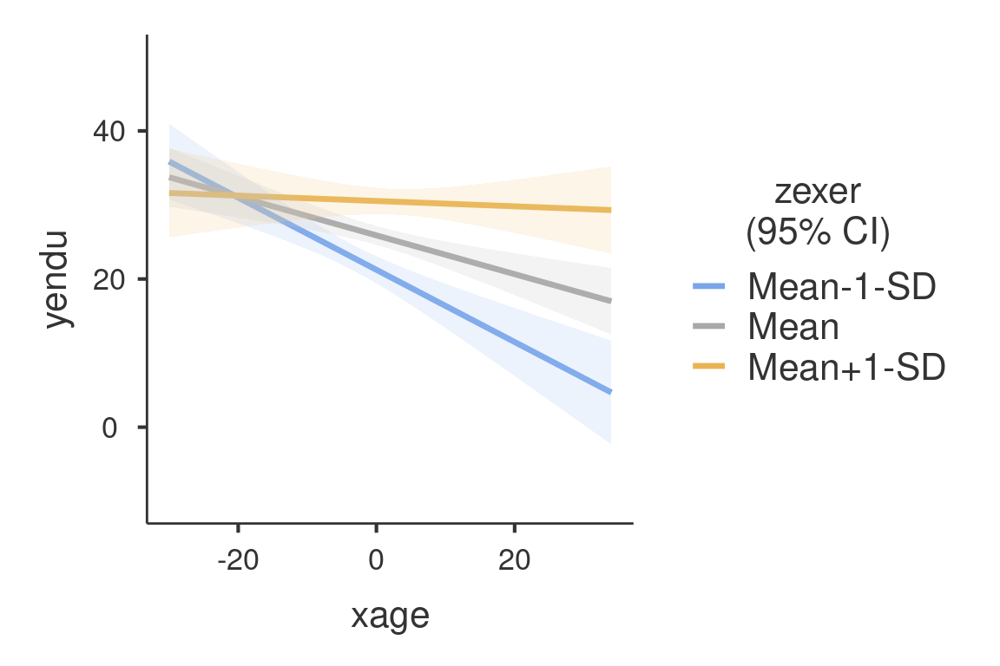
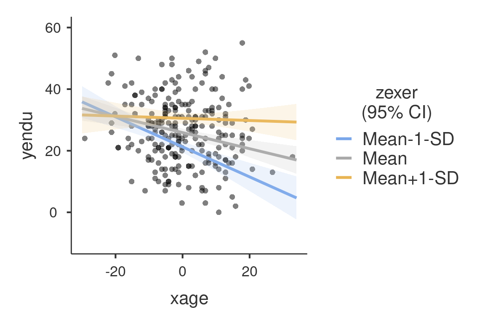
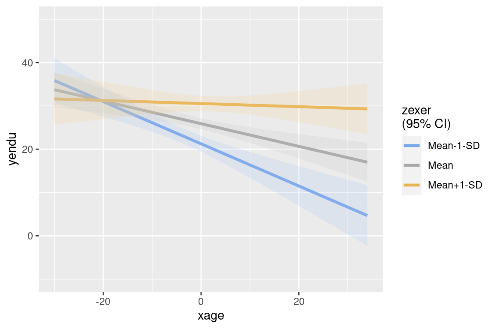

library(gamlj)In this example we run a moderated regression analysis with simple slopes analysis and simple slopes graphs. Data are from Cohen et al 2003 and can be downloaded here.
The research is about physical endurance associated with age and physical exercise. 245 participants were measured while jogging on a treadmill. Endurance was measured in minutes (‘yendu’ in the file). Participants’ age (xage in years) and number of years of physical exercise (zexer in years) were recorded as well
data<-read.csv("https://raw.githubusercontent.com/mcfanda/gamlj_docs/master/data/exercise.csv")
summary(data[,c("xage","zexer","yendu")]) xage zexer yendu
Min. :20.0 Min. : 0.0 Min. : 0.0
1st Qu.:43.0 1st Qu.: 7.0 1st Qu.:19.0
Median :48.0 Median :11.0 Median :27.0
Mean :49.2 Mean :10.7 Mean :26.5
3rd Qu.:56.0 3rd Qu.:14.0 3rd Qu.:33.0
Max. :82.0 Max. :26.0 Max. :55.0 The researcher is interested in studying the relationships between endurance, age, and exercising, with the hypothesis that the effect of age (expected to be negative) is moderated by exercise, such that the more participants work out (higher levels of exer) the less age negatively affects endurance.
We can think about this analytic problem as a multiple regression, where the effect of age and exercise can be estimated while keeping constant the other variable. However, the researcher puts forward a moderation hypothesis, because s/he expects the effect of age to change for different levels of exercising. We than need an interaction between age and exercise.
We first run a multiple regression (to warm up), then we estimate a multiple regression with an interaction (moderated regression) and we probe the interaction with a simple slope analysis and simple slope graphs. Technical details can be found in Cohen et al 2003, or in Preacher website.
GAMLj GML function minimum setup only requires to specify the formula of the model and the dataframe. The formula interface is the same one uses in lm() function.
mod1<-gamljGlm(formula = yendu~xage+zexer, data=data)
mod1
GENERAL LINEAR MODEL
Model Info
──────────────────────────────────────────────
Info
──────────────────────────────────────────────
Estimate Linear model fit by OLS
Call yendu ~ 1 + xage + zexer
R-squared 0.166
Adj. R-squared 0.159
──────────────────────────────────────────────
MODEL RESULTS
ANOVA Omnibus tests
────────────────────────────────────────────────────────
SS df F p η²p
────────────────────────────────────────────────────────
Model 4751 2 24.1 < .001 0.166
xage 1516 1 15.4 < .001 0.060
zexer 4298 1 43.7 < .001 0.153
Residuals 23810 242
Total 28561 244
────────────────────────────────────────────────────────
Fixed Effects Parameter Estimates
─────────────────────────────────────────────────────────────────────────────────────────────
Names Estimate SE Lower Upper β df t p
─────────────────────────────────────────────────────────────────────────────────────────────
(Intercept) 26.531 0.6337 25.282 27.779 0.000 242 41.87 < .001
xage -0.257 0.0655 -0.386 -0.128 -0.240 242 -3.93 < .001
zexer 0.916 0.1386 0.643 1.189 0.404 242 6.61 < .001
───────────────────────────────────────────────────────────────────────────────────────────── The object `mod’ is an R6 object which contains all the results tables and some additional function that can be used in subsequent analyses. Tables are pretty printed, but they can be modified or manipulated by transforming them in dataframes as follows:
anofaDF<-mod1$main$anova$asDF
anofaDF name ss df f p etaSqP
1 Model 4751 2 24.1 0.000000000275 0.1663
2 xage 1516 1 15.4 0.000113055878 0.0599
3 zexer 4298 1 43.7 0.000000000244 0.1529
4 Residuals 23810 242 NA NA NA
5 Total 28561 244 NA NA NAResults show three tables. The Model Info table contains information about the overall model. The ANOVA omnibus tests table contains the results of the car:Anova() function, with the addition of the partial \(\eta^2\) index for each effect and the inferential test for the whole model. The Fixed Effecta Parameter Estimates table contains the summary() results. For each coefficient the confidence interval is also reported.
A special note should be made for the intercept. The intercept is the expected value (the mean) of the dependent variable, estimated for all independent variables equal to their means. This is because in gamljGlm(), continuous variables are centered to their mean by default. In case one wants the independent variables not to be centered, one can select a different scaling with the option scaling.
Additional effect size indexes can be asked with the option effectSize.
mod2<-gamljGlm(formula = yendu~xage+zexer,
data=data,
effectSize = c("beta", "eta","etap","omega","epsilon"))
mod2$main$anova
ANOVA Omnibus tests
───────────────────────────────────────────────────────────────────────────────────
SS df F p η² η²p ω² ε²
───────────────────────────────────────────────────────────────────────────────────
Model 4751 2 24.1 < .001 0.166 0.166 0.159 0.159
xage 1516 1 15.4 < .001 0.053 0.060 0.049 0.050
zexer 4298 1 43.7 < .001 0.150 0.153 0.147 0.147
Residuals 23810 242
Total 28561 244
─────────────────────────────────────────────────────────────────────────────────── The same analysis can be done by updating the model with the update() function. Almost all the options available in gamljGlm() can be added to a model by running update(mod,...) where ... is any option or options accepted by gamljGlm().
mod2_2<-update(mod1,effectSize = c("beta", "eta","etap","omega","epsilon"))
mod2_2$main$anova
ANOVA Omnibus tests
───────────────────────────────────────────────────────────────────────────────────
SS df F p η² η²p ω² ε²
───────────────────────────────────────────────────────────────────────────────────
Model 4751 2 24.1 < .001 0.166 0.166 0.159 0.159
xage 1516 1 15.4 < .001 0.053 0.060 0.049 0.050
zexer 4298 1 43.7 < .001 0.150 0.153 0.147 0.147
Residuals 23810 242
Total 28561 244
─────────────────────────────────────────────────────────────────────────────────── To include the interaction we simply add the interaction effect in the formula.
mod3<-gamljGlm(formula = yendu~xage*zexer, data=data)
mod3
GENERAL LINEAR MODEL
Model Info
───────────────────────────────────────────────────────────
Info
───────────────────────────────────────────────────────────
Estimate Linear model fit by OLS
Call yendu ~ 1 + xage + zexer + xage:zexer
R-squared 0.206
Adj. R-squared 0.196
───────────────────────────────────────────────────────────
MODEL RESULTS
ANOVA Omnibus tests
─────────────────────────────────────────────────────────
SS df F p η²p
─────────────────────────────────────────────────────────
Model 5887 3 20.9 < .001 0.206
xage 1570 1 16.7 < .001 0.065
zexer 4775 1 50.8 < .001 0.174
xage:zexer 1137 1 12.1 < .001 0.048
Residuals 22674 241
Total 28561 244
─────────────────────────────────────────────────────────
Fixed Effects Parameter Estimates
───────────────────────────────────────────────────────────────────────────────────────────────
Names Estimate SE Lower Upper β df t p
───────────────────────────────────────────────────────────────────────────────────────────────
(Intercept) 25.8887 0.6466 24.6150 27.1625 0.000 241 40.04 < .001
xage -0.2617 0.0641 -0.3879 -0.1355 -0.244 241 -4.08 < .001
zexer 0.9727 0.1365 0.7038 1.2417 0.429 241 7.12 < .001
xage:zexer 0.0472 0.0136 0.0205 0.0740 0.211 241 3.48 < .001
─────────────────────────────────────────────────────────────────────────────────────────────── Because variables are centered to their means, the first-order coefficients can be interpreted as “average” effects. One can also report the betas (\(\beta\)). The estimates of the betas are correct also in the presence of the interaction, because the variables are standardized before the interaction term is computed.
We can now probe the interaction. One can re-run the model adding the appropriate options to ask for simple effects or one can use the gamlj_simpleffects() function, which is a convenience function to add simple effects to a pre-existing model. The function gamlj_simpleffects(), however, only returns the simple effects tables, not the full model.
#mod4<-gamljGlm(formula = yendu~xage*zexer,
# data=data,
# simpleVariable = "xage",
# simpleModerator = "zexer")
### equivalent results :
gamlj_simpleEffects(mod3,variable = "xage",moderator = "zexer")
SIMPLE EFFECTS
Simple effects of xage : Omnibus Tests
──────────────────────────────────────────────────────────────
zexer F Num df Den df p η²p
──────────────────────────────────────────────────────────────
Mean-1-SD 27.972 1.00 241 < .001 0.104
Mean 16.686 1.00 241 < .001 0.065
Mean+1-SD 0.160 1.00 241 0.690 0.001
──────────────────────────────────────────────────────────────
Simple effects of xage : Parameter estimates
─────────────────────────────────────────────────────────────────────────────────────────────
zexer Estimate SE Lower Upper β df t p
─────────────────────────────────────────────────────────────────────────────────────────────
Mean-1-SD -0.4873 0.0921 -0.669 -0.306 -0.4552 241 -5.289 < .001
Mean -0.2617 0.0641 -0.388 -0.135 -0.2445 241 -4.085 < .001
Mean+1-SD -0.0361 0.0903 -0.214 0.142 -0.0337 241 -0.400 0.690
───────────────────────────────────────────────────────────────────────────────────────────── In this way we obtain the effect of age computed for high exercise (zexer centered to 1 SD above average), the main effect of age (zexer centered to its mean) and the effect of age computed for low exercise (zexer centered to -1 SD above average). gamlGLM() produces both the F-tests and the parameter estimates for the simple slopes. We focus on the latter table now.
One can change the conditioning levels of the moderators with the simpleScale option (default is mean_sd for mean plus/minus one SD), either added to the gamljGlm() function or to the gamlj_simpleEffects() function. If one wants to use the percentiles (25%,50%,75%), for instance, one can run the following.
gamlj_simpleEffects(mod3,variable = "xage",moderator = "zexer",simpleScale="percent")
SIMPLE EFFECTS
Simple effects of xage : Omnibus Tests
─────────────────────────────────────────────────────────
zexer F Num df Den df p η²p
─────────────────────────────────────────────────────────
25xxx 28.15 1.00 241 < .001 0.105
50xx 14.74 1.00 241 < .001 0.058
75xxx 1.81 1.00 241 0.180 0.007
─────────────────────────────────────────────────────────
Simple effects of xage : Parameter estimates
─────────────────────────────────────────────────────────────────────────────────────────
zexer Estimate SE Lower Upper β df t p
─────────────────────────────────────────────────────────────────────────────────────────
25xxx -0.435 0.0820 -0.597 -0.2736 -0.4066 241 -5.31 < .001
50xx -0.246 0.0641 -0.373 -0.1199 -0.2300 241 -3.84 < .001
75xxx -0.105 0.0777 -0.257 0.0485 -0.0976 241 -1.35 0.180
───────────────────────────────────────────────────────────────────────────────────────── The simple effects are now changed, because they are estimated for a different set of values of the moderator.
One can further tweak the appearance of the tables by selecting a different value/labels in simpleScaleLabels option. Options are “labels”, “values” and “values_labels”. The latter outputs the values and the labels of the conditioning values.
gamlj_simpleEffects(mod3,variable = "xage",moderator = "zexer",
simpleScale="percent",
simpleScaleLabels="values_labels")
SIMPLE EFFECTS
Simple effects of xage : Omnibus Tests
────────────────────────────────────────────────────────────────
zexer F Num df Den df p η²p
────────────────────────────────────────────────────────────────
25xxx=-3.673 28.15 1.00 241 < .001 0.105
50xx=0.327 14.74 1.00 241 < .001 0.058
75xxx=3.327 1.81 1.00 241 0.180 0.007
────────────────────────────────────────────────────────────────
Simple effects of xage : Parameter estimates
────────────────────────────────────────────────────────────────────────────────────────────────
zexer Estimate SE Lower Upper β df t p
────────────────────────────────────────────────────────────────────────────────────────────────
25xxx=-3.673 -0.435 0.0820 -0.597 -0.2736 -0.4066 241 -5.31 < .001
50xx=0.327 -0.246 0.0641 -0.373 -0.1199 -0.2300 241 -3.84 < .001
75xxx=3.327 -0.105 0.0777 -0.257 0.0485 -0.0976 241 -1.35 0.180
──────────────────────────────────────────────────────────────────────────────────────────────── We can get a clear picture of the interaction by asking for a plot. Also the plot module takes care of centering the variables in a way that makes the plot clearly understandable.
The options needed in gamljGlm() are plotHAxis for the x-axis variable and plotSepLines for the moderator. At which three levels of the moderator the separate lines are computed is decided by the option simpleScale as for the simple effects.
mod4<-gamljGlm(formula = yendu~xage*zexer, data=data,
plotHAxis = "xage",plotSepLines = "zexer",plotError = "ci")
plot(mod4)
The nice plot we get shows the simple effects (simple equations to be precise) with the prediction confidence intervals indicated by the colored shades around the lines. If needed, the confidence intervals can be substituted with the standard errors of the estimates or they can be removed completely.
We use theplot() function. The function, applied to a gamlj results object, returns one plot if it is present in the model, returned as a ggplot2 object. If more than one plot is present, a list of plots is returned. FALSE is returned if no plot is present or defined. The function plot() can also be use to add new plots or to add options to the plots.
For instance, if we want to give a more honest account of the model fit, we can visualize the simple slopes over the the actual data. The function plot() produces a new plot after adding any options accepted by gamljGlm()
plot(mod4,plotRaw=T)
Any plot produced by gamljGlm or plot() can be obtained as a ggplot2 object for further manipulations or usage. For instance, one can change the theme of the plot:
myplot<-plot(mod4)
myplot+ggplot2::theme_grey()